Soy Facundo Tobio, Técnico en Laboratorio graduado de la Universidad Nacional de La Plata, actualmente full stack developer especializado en testing manual y automatizado, con más de tres años de experiencia en el diseño y desarrollo de soluciones digitales. En mi trayectoria profesional, he trabajado en la creación, mejora y mantenimiento de sistemas en sectores como fintech, gestión empresarial y plataformas digitales. Cuento con experiencia implementando microservicios eficientes, optimizando bases de datos y desarrollando flujos automatizados que incrementan la productividad y el orden en los procesos, utilizando técnicas de web scraping para la extracción y análisis de datos, mejorando la precisión y la eficiencia en la obtención de información clave. Como full stack developer poseo sólidos conocimientos técnicos que complementan mi rol de QA, incluyendo APIs, bases de datos y arquitecturas de software, lo que me permite realizar un testeo más integral, profundo y efectivo.
Desarrollo Web
Desarrollo soluciones escalables aplicando principios SOLID y Clean Code. Participo activamente en iniciativas de mejora continua, tanto desde el desarrollo como desde la calidad del software, incorporando testing automatizado con herramientas como Cypress y Playwright. Actualmente, colaboro en proyectos que combinan React en el frontend con C#/.NET en el backend, enfocándome en entregar software eficiente, mantenible y alineado a los objetivos del negocio.
Artículos
Participo activamente en la comunidad de LinkedIn, compartiendo aprendizajes, experiencias técnicas y reflexiones sobre desarrollo y calidad de software. Publico contenido relacionado con automatización, proyectos personales, cursos y herramientas que utilizo en mis desarrollos. Busco generar valor desde mi experiencia, fomentar el intercambio con colegas del sector y fortalecer mi marca personal dentro de una red profesional en constante crecimiento.
Formación
Mi formación como Full Stack Developer y QA manual y automatizado, me brindó una visión integral del desarrollo de software. Comprender a fondo tanto el front como el back me permite diseñar y ejecutar pruebas más efectivas, precisas y contextualizadas. Esta combinación de conocimientos técnicos y enfoque en calidad me facilita anticiparme a posibles errores. Mi background técnico potencia mi rol como QA Automation, permitiéndome crear flujos de prueba sólidos y alineados a las necesidades de cada sistema.


 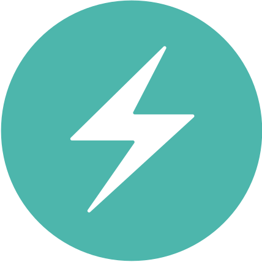
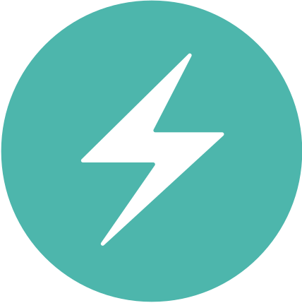


 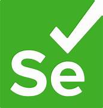
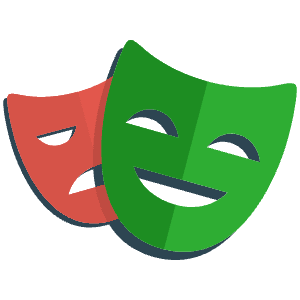
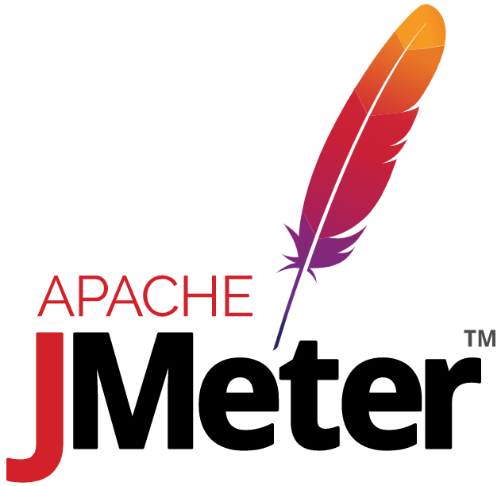
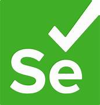
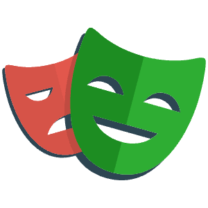
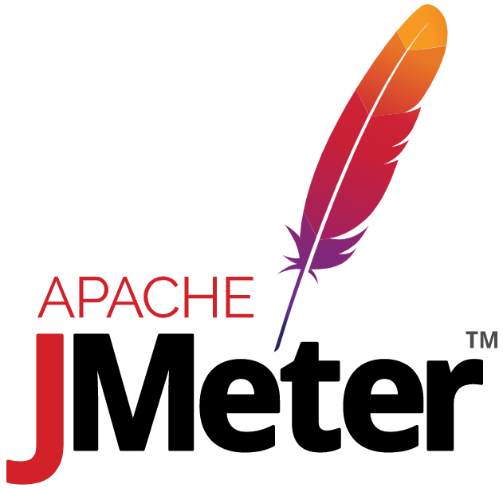

 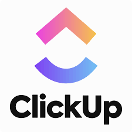
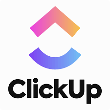

 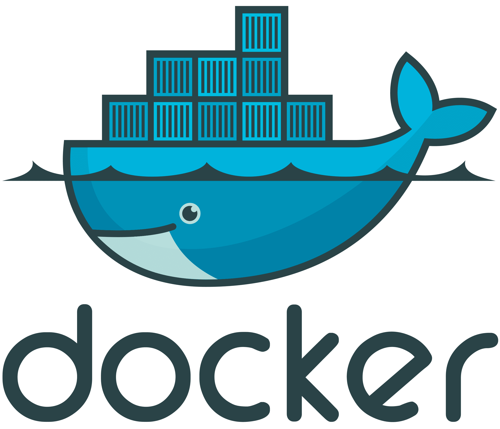
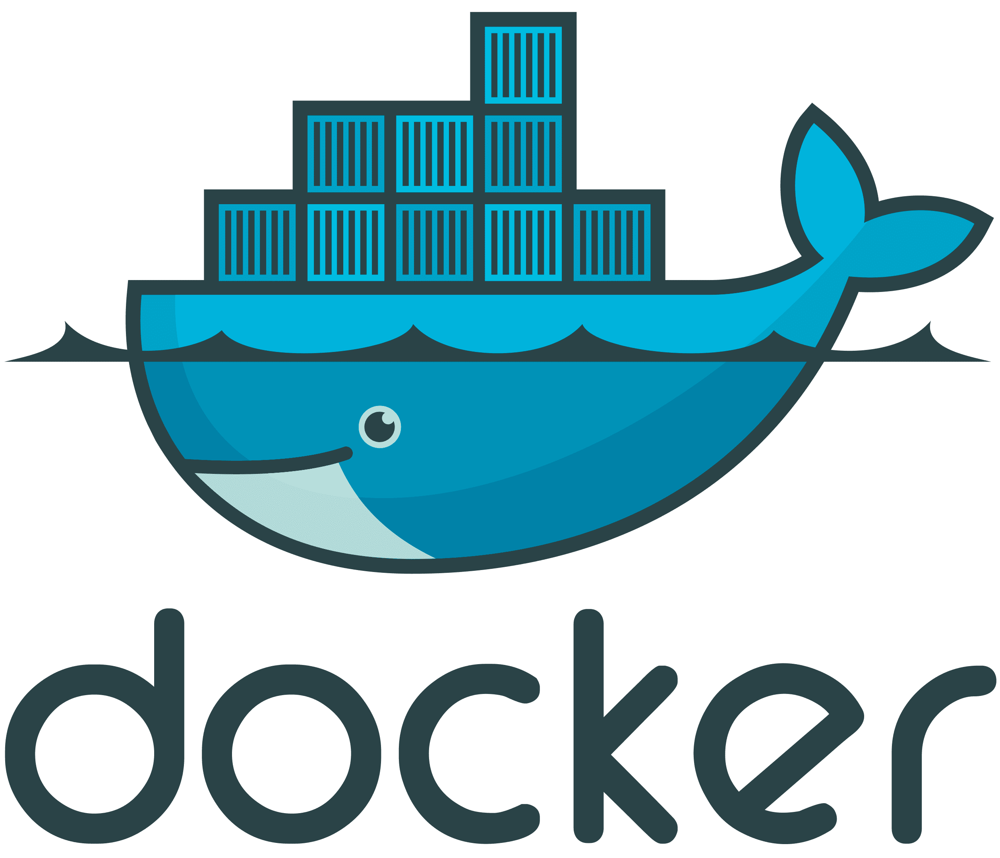


 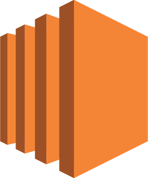
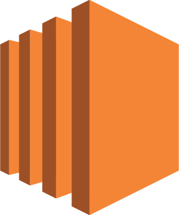

© Junio/2023 ~ Tablero de ventas - versión 2.0
Plataforma SaaS basada en microservicios donde participé en el desarrollo backend en C# y .NET, utilizando entity framework y Dapper para la conexión a la base de datos. Trabajé en una arquitectura orientada a eventos utilizando Amazon SQS para el procesamiento asincrónico entre servicios, favoreciendo el desacoplamiento y la resiliencia del sistema. Utilice Amazon S3 para el almacenamiento centralizado de archivos y documentación de clientes, asegurando una gestión estructurada de los recursos multimedia. Además, colaboré en la gestión de instancias EC2 y en el monitoreo mediante CloudWatch para garantizar estabilidad, disponibilidad y control del consumo de recursos. La arquitectura se exponía a través de API Gateway, que funcionaba como punto de entrada para los servicios distribuidos.
© Enero/2024 ~ Temba
Plataforma fintech de factoring digital que permite a los usuarios obtener liquidez de forma rápida y autogestionada. Aquí participé en el desarrollo de APIs backend en C# y .NET para la integración con el frontend utilizando TypeScript y React, donde implementé funcionalidades clave como la asignación dinámica de ejecutivos, la validación en línea con el Servicio de Impuestos Internos de Chile, la cesión de documentos tanto manual como automatizada, la visualización de la cartera de clientes para ejecutivos, el mantenedor de perfiles para clientes, la generación de simulaciones en formato PDF, y el envío automatizado de correos electrónicos mediante Amazon SNS para entregar retroalimentación al momento de crear nuevas operaciones. y el almacenamiento seguro de documentación financiera en Amazon S3, contribuyendo a la gestión estructurada y escalable de archivos dentro de un entorno fintech donde la disponibilidad y la integridad de la información eran factores críticos.
© Septiembre/2024 ~ Progreso
Realicé mejoras en los módulos de contratos Factoring, Serviu, Ordering e Informe Serviu. Trabajé con C# en el back y JavaScript con React en el front. Efectué cambios en el look and feel de las plantillas de los contratos, lo que resultó en una interfaz más intuitiva y atractiva para los usuarios. Una de las mejoras clave fue la implementación de variables dinámicas conectadas a una base de datos MySQL, facilitando la creación y personalización de plantillas, mejorando el flujo de trabajo al permitir una gestión más flexible de los datos y agilizando el proceso de generación de contratos, adaptándose mejor a las necesidades del negocio.
© Diciembre/2024 ~ Progreso
Mi responsabilidad fue garantizar la calidad del producto, para ello diseñé y ejecuté casos de prueba detallados como pruebas funcionales para verificar que cada característica operara según lo esperado y pruebas de regresión para asegurar que las nuevas implementaciones no afectaran negativamente las funcionalidades existentes. Además, llevé a cabo pruebas de aceptación que confirmaron que el producto cumplía con los requisitos y expectativas del cliente. Para estar informados sobre el estado de cada proceso, documenté incidencias en ClickUp, permitiendo un seguimiento efectivo y brindando claridad en la comunicación con el equipo de desarrollo.
© Julio/2025 ~ Fischer Medical
Bloom es un sistema de misión crítica con tolerancia mínima al error, destinado al monitoreo de señales fisiológicas, desarrollado en C# y WPF, siguiendo el patrón MVVM, donde contribuí al desarrollo y mantenimiento de la tercera versión de esta aplicación, gestionando la persistencia de configuraciones utilizando una base de datos SQLite, permitiendo a los usuarios personalizar su experiencia y mantener la integridad de sus datos. Además, optimicé la coherencia visual y el funcionamiento de la interfaz, asegurando una experiencia de usuario intuitiva y fluida.